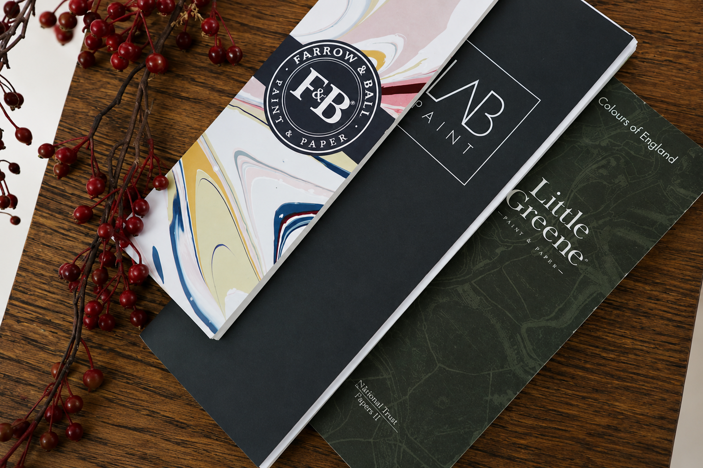

Welkom op mijn website. Mijn naam is Jorieke de Visser
en ik woon in Dirksland op Goeree-Overflakkee. Ik geniet ervan om nieuwe culturen te ontdekken
en breng graag tijd door met familie en vrienden.
Maar mijn grootste passie? Schilderen. Uw
woning weer verzorgd laten ogen en optimaal beschermen. Met oog voor detail en vakmanschap zorg
ik voor schilderwerk van hoge kwaliteit. Bent u benieuwd wat ik voor u kan betekenen? Neem dan
gerust verder een kijkje op mijn website.


Binnenschilderwerk
Hoogwaardig binnenschilderwerk beschermt oppervlakken tegen slijtage en geeft uw woning, kantoor of bedrijfsruimte een frisse en stijlvolle uitstraling.
Fotobehang / Patroonbehang
Behang met unieke prints of patronen voegt persoonlijkheid, diepte en karakter toe aan elke ruimte, en creëert een onderscheidende interieurstijl.
Heeft u een specifieke wens of bent u op zoek naar advies op maat?
Neem gerust contact met ons op. Wij denken graag met u mee.

Bij JDV Elektrotechniek zijn wij gespecialiseerd in professionele elektrotechnische installaties, moderne verlichtingsoplossingen en betrouwbaar onderhoud voor woningen en bedrijven. Met een sterke focus op kwaliteit, veiligheid en precisie levert JDV Elektrotechniek maatwerk. Of het nu gaat om een renovatie, nieuwbouwproject of systeemupgrade, wij zorgen voor efficiënte en toekomstbestendige oplossingen. Bij JDV Elektrotechniek staan vakmanschap en klanttevredenheid altijd voorop.
Bij Schildersbedrijf Jorieke de Visser staat een persoonlijke aanpak centraal bij elk project. We nemen de tijd om naar uw wensen te luisteren, geven eerlijk advies en zorgen ervoor dat elk detail klopt met uw visie. Met passie, vakmanschap en heldere communicatie leveren we schilderwerk dat echt als thuis voelt.